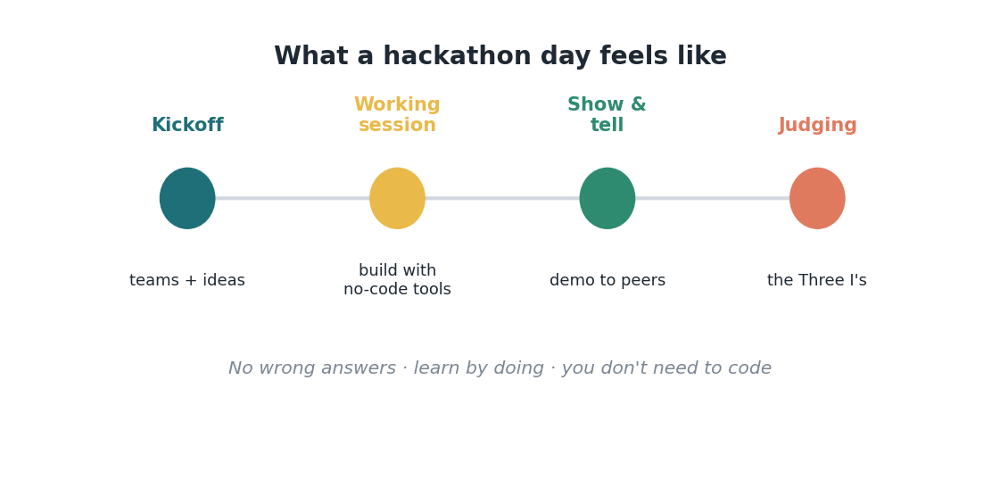
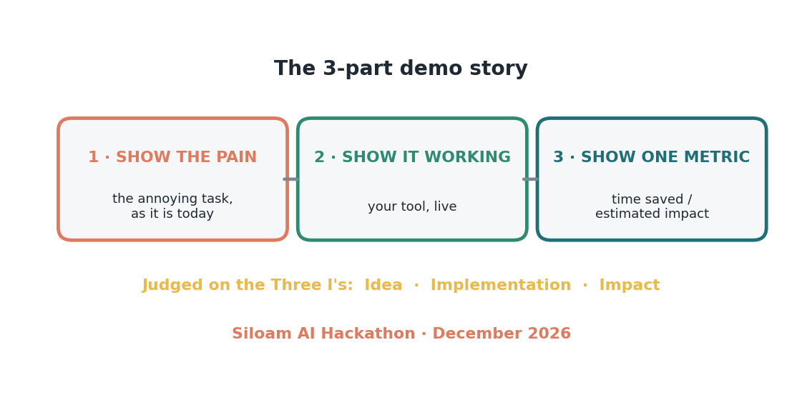

Jembatan 3 — Kamu berhak ada di sini
Coba saya tebak apa yang menahanmu. Di suatu tempat di kepalamu ada suara pelan yang bilang, "Hackathon itu buat orang teknis. Saya bakal keteteran. Saya bakal malu sendiri." Saya mau jawab suara itu langsung dan dengan lembut, karena itu salah, dan itu satu-satunya yang menghalangi kamu dari sesuatu yang beneran bakal kamu nikmati. Jadi ini kebenarannya, blak-blakan: kamu berhak ada di hackathon ini, persis seperti kamu apa adanya.
Mulai dari mitos terbesar. Kamu nggak perlu bisa coding. Tool no-code modern yang ngerjain kerja beratnya — kamu deskripsikan apa yang kamu mau pakai bahasa biasa dan mereka yang membangunnya. Orang yang bernilai di sebuah hackathon bukan yang bisa nulis software; tapi yang paling paham betul masalah yang layak diselesaikan. Itu kamu. Kamu tahu persis denial mana yang bikin sakit kepala, laporan mana yang bikin capek, pertanyaan mana yang ditanyain berulang-ulang. Pengetahuan itu bahan yang langka. Bagian membangunnya sekarang jadi yang paling gampang.
Mitos berikutnya: takut kamu bakal ngerjain dengan salah. Nggak ada jawaban salah di sebuah hackathon. Intinya adalah belajar dengan mengerjakan, bukan mengirim kesempurnaan. Prototipe yang cuma setengah jalan tetep ngajarin kamu sesuatu. Ide yang gagal tetep ngajarin ruangan itu sesuatu. Nggak ada yang menilai kamu berdasarkan standar keahlian; semua orang di sini pemula, termasuk yang keliatannya percaya diri. Ini workshop buat orang yang penasaran, bukan ujian buat yang udah ahli.
Biar saya jelasin hari-H-nya biar berasa nggak seseram itu (Gambar B3.1). Hackathon punya ritme yang bersahabat: kickoff di mana kamu bentuk tim dan berbagi ide, sesi kerja di mana kamu membangun dengan dukungan dan mentor di dekatmu, show-and-tell di mana tiap tim demo, dan penjurian ringan di akhir. Itu doang. Ini lebih mirip workshop yang seru daripada kompetisi bertekanan tinggi. Ada starter kit, ada orang yang bantu, dan energi di ruangan itu banyak banget. Kamu nggak akan ditinggal sendirian buat mikirin caranya.

Dan waktu giliran kamu nunjukin apa yang kamu bikin, ada satu cerita sederhana yang selalu berhasil (Gambar B3.2). Tunjukkan rasa sakitnya — tugas nyebelin itu seperti hari ini. Tunjukkan itu jalan — tool-mu, secara langsung. Tunjukkan satu angka — waktu yang bisa dihemat, atau estimasi kasar dampaknya. Pain, proof, payoff (sakit, bukti, hasil). Kamu nggak perlu pitch yang mengkilap; kamu perlu bikin ruangan itu ngerasain masalahnya dan lihat kalau tool-mu bantu. Siapapun bisa cerita tiga bagian itu, apalagi soal tugas yang mereka kenal betul.

Jadi ini undangan hangatku yang nggak bikin tegang (Gambar B3.3). Hackathon AI Siloam kita ini bulan Desember. Kamu nggak perlu siap-siap banyak — cukup bawa tugas nyebelin yang selama ini kamu tanggung dan pikiran yang terbuka. Catat satu ide minggu ini. Pertimbangkan buat daftar. Datang jadi pemula bareng kita semua, dan cari tahu seberapa banyak yang bisa kamu bangun dalam sehari. Ruangan itu lebih baik dengan kamu di dalamnya, justru karena kamu tahu masalah-masalah yang beneran penting. Kamu berhak ada di sana. Saya harap kamu datang.

Sumber
- Struktur hari hackathon (kickoff → sesi kerja → show-and-tell → penjurian); no-code, belajar sambil mengerjakan; hasil kapabilitas (3 solusi dalam 48 jam) — Virtasant, "How to Create and Host an AI Hackathon in 6 Weeks" (Feb 2026), https://www.virtasant.com/ai-today/how-to-create-and-host-an-ai-hackathon-in-6-weeks
- Three I's (Idea, Implementation, Impact); cerita demo 3 bagian (pain, proof, payoff) — The AI Hackathon Guide (Karadimitriou, 2026), https://kosmas10.github.io/ai-hackathon-guide/
- Konsep hackathon-to-product — aihackathon.com.